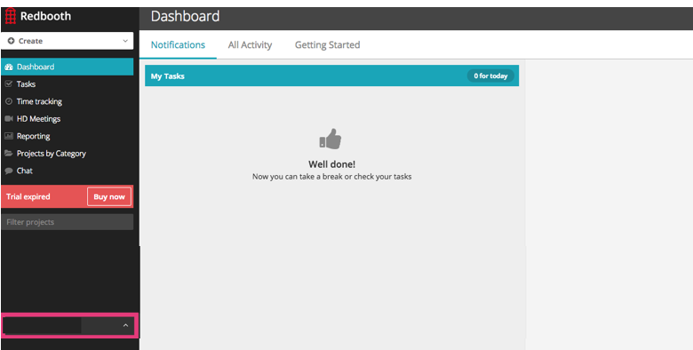
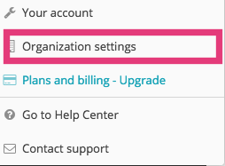
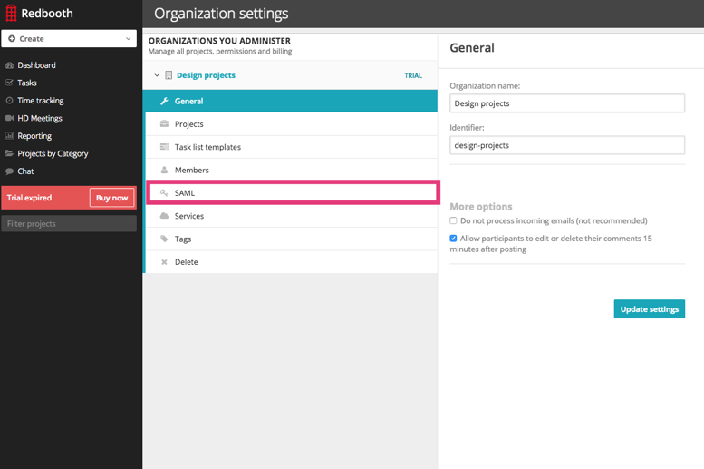
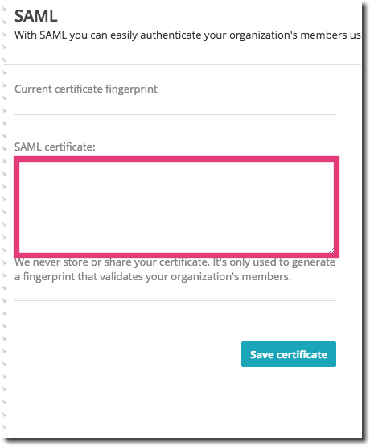

Sign into Redbooth. Click on your name in the lower left corner of the screen, as shown below.
When the popup menu appears, select Organization Settings, as shown below.
Select SAML in the Organization Settings pane, as shown below.
Copy and paste the following SAML Certificate, as shown below. Be sure to copy the Begin Certificate and End Certificate lines.
Sign into the Okta Admin dashboard to generate this value.

Done!
Note: IdP-initiated flows are supported. SP-initiated flows and Just In Time (JIT) provisioning are not supported.